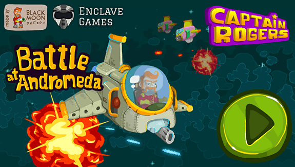
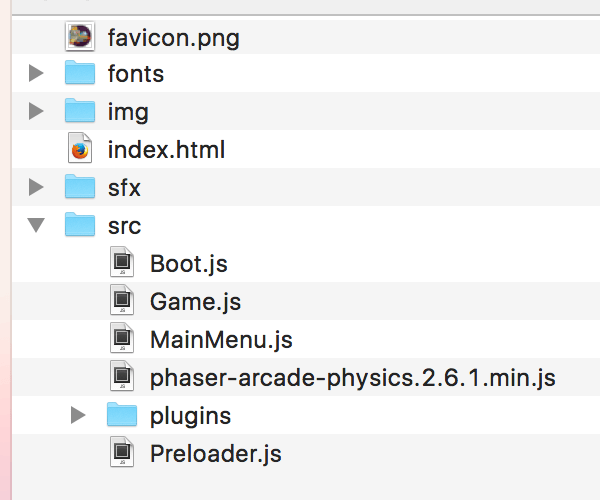

One of HTML5's main advantages as a game development platform is the ability to run on various platforms and devices. Streamlining cross device differences creates multiple challenges, not least when providing appropriate controls for different contexts. In this series of articles we will show you how you can approach building a game that can be played using touchscreen smartphones, mouse and keyboard, and also less common mechanisms such as gamepads.
We'll be using the Captain Rogers: Battle at Andromeda demo as an example.

Captain Rogers was created using the Phaser framework, the most popular tool for simple 2D game development in JavaScript right now, but it should be fairly easy to reuse the knowledge contained within these articles when building games in pure JavaScript or any other framework. If you're looking for a good introduction to Phaser, then check the 2D breakout game using Phaser tutorial.
In the following articles we will show how to implement various different control mechanisms for Captain Rogers to support different platforms — from touch on mobile, through keyboard/mouse/gamepad on desktop, to more unconventional ones like TV remote, shouting to or waving your hand in front of the laptop, or squeezing bananas.
Let's start with a quick overview of the game's folder structure, JavaScript files and in-game states, so we know what's happening where. The game's folders look like this:

As you can see there are folders for images, JavaScript files, fonts and sound effects. The src folder contains the JavaScript files split as a separate states — Boot.js, Preloader.js, MainMenu.js and Game.js — these are loaded into the index file in this exact order. The first one initializes Phaser, the second preloads all the assets, the third one controls the main menu welcoming the player, and the fourth controls the actual gameplay.
Every state has its own default methods: preload(), create(), and update(). The first one is needed for preloading required assets, create() is executed once the state had started, and update() is executed on every frame.
For example, you can define a button in the create() function:
create: function() {
// ...
var buttonEnclave = this.add.button(10, 10, 'logo-enclave', this.clickEnclave, this);
// ...
}
It will be created once at the start of the game, and will execute this.clickEnclave() action assigned to it when clicked, but you can also use the mouse's pointer value in the update() function to make an action:
update: function() {
// ...
if(this.game.input.mousePointer.isDown) {
// do something
}
// ...
}
This will be executed whenever the mouse button is pressed, and it will be checked against the input's isDown boolean variable on every frame of the game.
That should give you some understanding of the project structure. We'll be playing mostly with the MainMenu.js and Game.js files, and we'll explain the code inside the create() and update() methods in much more detail in later articles.
There's also a small online demo with full source code available on GitHub where the basic support for the control mechanisms described in the articles is implemented in pure JavaScript. It will be explained in the given articles themselves below, but you can play with it already, and use the code however you want for learning purposes.
JavaScript is the perfect choice for mobile gaming because of HTML5 being truly multiplatform; all of the following articles focus on the APIs provided for interfacing with different control mechanisms: